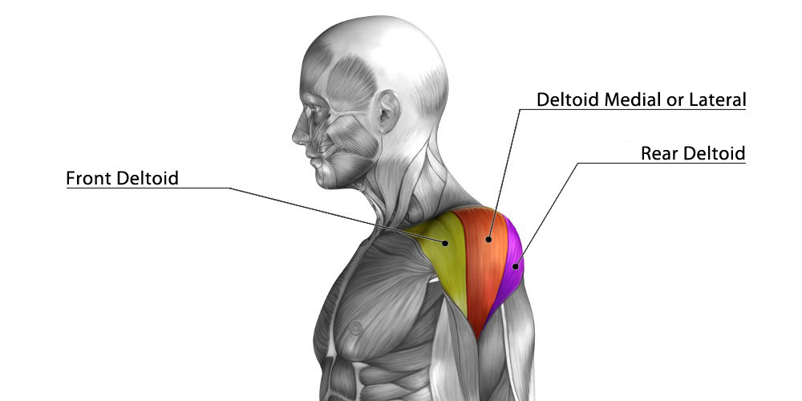

sets and reps
for sets ans reps there are a range of different ways you can do these, if your looking to cut down or bulk up you would need to apply different sets and reps for your exercise.
For endurance you should do 3-4 sets with 12+ repetitions.
For hypertrophy you should do 3-6 sets of 6-12 repetitions.
For muscles mass you should do 4-6 sets and 6 or less repetitions
For power/single rep you should do 3-5 sets of 1-2 repetitions
Arms
The best way to train your arms is to pick an exercise for every individual part of the muscle. For arms you have bicep, brachii, brachialis, coracobrachialis and the tricep
Within the bicep you have the long and short head, the best to his these is a variation of a preacher curl, hammer curl.
For the brachialis the exercise you can do is ez bar reverse curl and chin ups.
For the coracobrachialis the exercises you can you do are pull-ups and dips
For triceps the exercises you can do either a overhead dumbbell press, skull-crushers or a pushdown

shoulders
the shoulder is made up of the Anterior deltoids, Lateral deltoids, Posterior deltoids.
For the anterior deltoid an exercise you can is any of an overhead press, whether that is weighted,dumbbell or using a band.
For the lateral deltoid an exercise you can do a lateral raise, it can be using a dumbbell, cable or a band.
For the posterior deltoid an exercise you can use is the rear delt fly if that is using the machine or using the dumbbells.

back
the back is built up by the levator Scapula, Trapezius, Latissimus dorsi and the minor and major Rhomboid.
For the Levator Scapula an exercise you can do a dumbbell shoulder shrug.
For the trapezius some exercises you can do are a face-pulls, upright row or a bent over row.
For the Latissimus dorsi some exercises you can do are a lat pull down, standing row or a machine row.
For the major and minor Rhomboid you can do is a seated cable row or a rear delt fly.
chest
The chest is made up of the upper, lower and middle which is also called clavicular head, sternocostal head and the abdominal head, whcih if you target all those parts you will see growth
For the upper chest you ca do either a inclined chest/dumbbell press or an inclined chest fly
For the middle chest you can do just a normal chest/dumbbell press r a chest fly
For the lower chest you can do a declined chest/dumbbell press, chest dip or an cable crossover.

legs
Your legs are made up of a multiple different parts like quads. calves, hamstrings and glutes.
With legs certain exercises can target the whole leg muscles group such as a squat and deadlifts.
For quads you can do a front squat and a leg extension.
For the hamstrings you can do a leg curls or a romanian deadlift.
For glutes you can do a glute bridge or a barbell hip thrust.
For calves any variation of a calf raise.